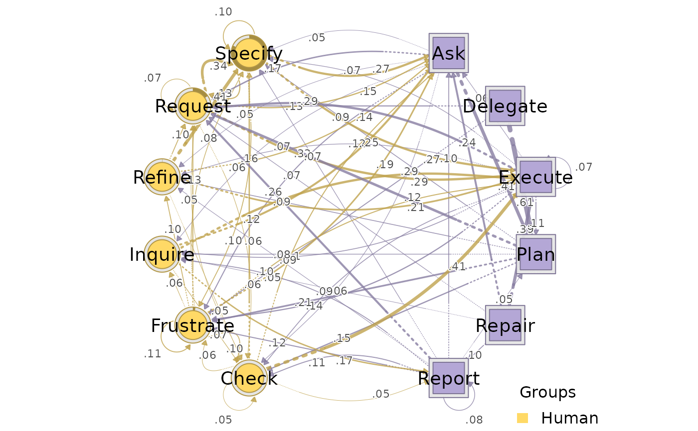

A long-format heterogeneous sequence dataset built from
Nestimate::human_long and Nestimate::ai_long by
collapsing several near-synonym codes into a smaller, more
interpretable alphabet. Suitable as a teaching example for
build_htna().
Format
A data frame with 19347 rows and 11 columns:
- message_id
Integer. Source message identifier.
- project
Character. Project label (e.g.
"Project_1").- session_id
Character. Session identifier — pass to
build_htna()as the session key.- timestamp
Integer. Unix timestamp of the message.
- session_date
Character. Date of the session (
YYYY-MM-DD).- code
Character. Simplified action code; the
code-column value passed tobuild_htna().- cluster
Character. Original cluster label from the source data, retained for reference (see Details).
- code_order
Integer. Order of the code within the message.
- order_in_session
Integer. Order of the row within the session — pass as the order key to
build_htna().- actor_type
Character.
"AI"or"Human"— the actor partition forbuild_htna(actor_type = "actor_type").- phase
Factor with levels
"Early"and"Late". Session-level cohort tag from a chronological split: sessions ordered by their firstsession_date(withsession_idas a deterministic tiebreak), then split in half. Suitable forbuild_htna(group = "phase").
Source
Derived from Nestimate::human_long and
Nestimate::ai_long; see data-raw/human_ai.R for the
build script.
Details
Code remapping (all other codes pass through unchanged):
AI:
Investigate,Ask,Inquire\(\to\)Ask;Explain,Report\(\to\)Report.Human:
Command,Request\(\to\)Request;Correct,Verify\(\to\)Check;Interrupt,Frustrate\(\to\)Frustrate.
Resulting alphabets:
AI (6):
Ask,Delegate,Execute,Plan,Repair,Report.Human (6):
Check,Frustrate,Inquire,Refine,Request,Specify.
Because two source codes can map to the same simplified code while
originally belonging to different cluster values, a single
simplified code may appear with more than one cluster
label across rows. The cluster column is preserved verbatim
from the source data and should be treated as informational only.
Examples
# \donttest{
data(human_ai)
net <- build_htna(human_ai, actor_type = "actor_type")
#> Warning: A network with one long sequence is not recommended and can't be validated using bootstrap and other confirmatory testings.
#> Metadata aggregated per session: ties resolved by first occurrence in 'session_date' (1 sessions), 'cluster' (42 sessions), 'actor_type' (24 sessions)
plot_htna(net)

# }